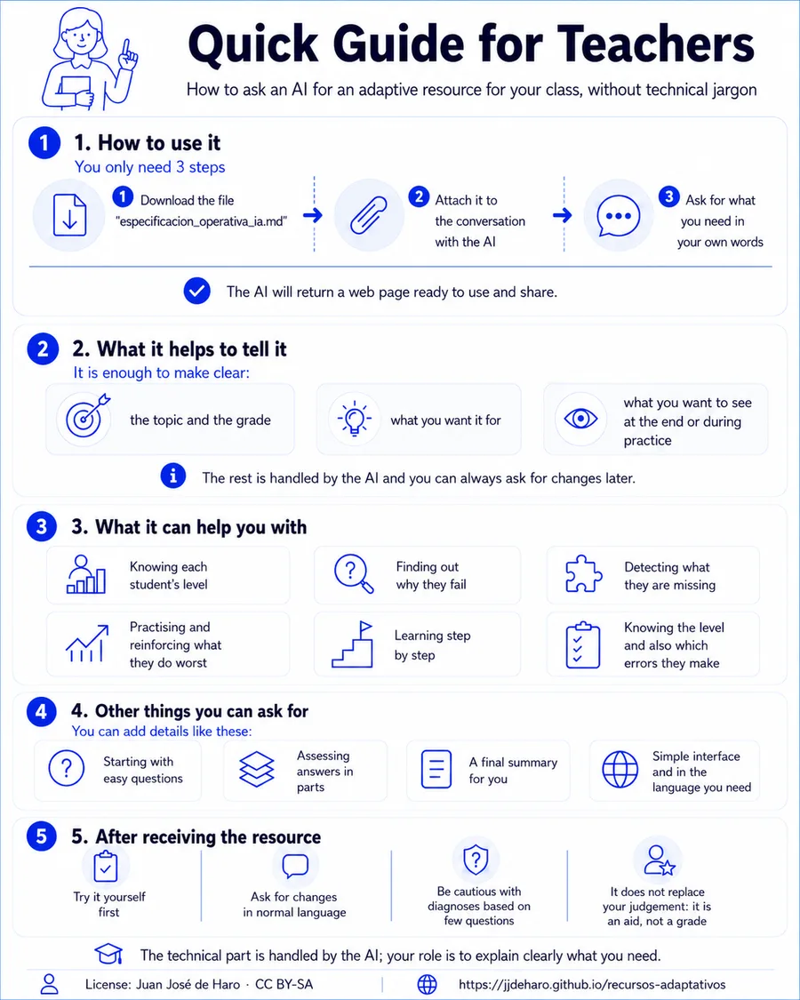

How to ask an AI for an adaptive resource for your class, without technical jargon
Version 1.2
This guide explains how to ask an AI (ChatGPT, Claude, Gemini...) to create an adaptive educational resource for your class, without needing to know the methodology behind it. The AI handles the technical side by following the file especificacion_operativa_ia_en.md.

With those three steps, you can already start. You do not need to keep reading. If you explain what you need, the AI should be able to create the program and ask only for the essential missing details.
What follows is not a procedure you must complete step by step. It is a guide to help you think about what you can ask for, what options you have, and how to express your idea more clearly if you want to refine the resource.
The AI will return a standalone web page: you can open it in any browser and share it with your students.
You do not need to fill in a formula. It is enough for your request to make these points clear, in your own words:
Everything else (number of questions, when it ends, how the result is calculated...) can be handled by the AI with reasonable defaults, and you can always ask for changes later.
What most determines the resource is what you want it for. These are the usual purposes, together with what the AI will give you in each case. You do not have to name or ask for a specific type of resource: describe your goal in your own words and the AI chooses the right format. Each purpose also includes a real request as an example, for guidance only: do not copy it word for word; write your own version with your own context.
| If you want to... | What the AI will give you |
|---|---|
| Know the student's level | a test that adapts and estimates their level |
| Find out why they fail | a test that tells apart the possible explanations of the error |
| Detect several possible errors | a test that checks each possible mistake separately |
| Practise what they struggle with most | a trainer that insists on what they master least |
| Learn in stages | a pathway that advances once each stage is mastered |
| Know both level and errors | a test that gives the level and also the specific mistakes |
A short test that adapts to the student's responses and ends by telling you their level. Useful at the start of a unit, at the end of it, or for grouping students.
A Year 5 primary teacher could ask, for example:
Read the attached document and implement the resource following the operational rules applicable to the requested type of resource. I want a short test to find out the level of my Year 5 pupils in equivalent fractions before starting the unit. At the end, both the student and I should see their level, how reliable the result is, and what would be best to do next.
When a student fails and you suspect there is one specific reason behind it (a misconception, an incorrect method they learned), the test can be designed to distinguish which explanation is the right one.
For example, in a lower-secondary language class:
Read the attached document and implement the resource following the operational rules applicable to the requested type of resource. My lower-secondary students struggle to identify the subject of a sentence, and I want to find out why each one fails. Only one of these explanations can be true for each student: either they think the subject is always whatever comes first in the sentence, or they identify it by meaning (who or what the sentence is about) without checking agreement with the verb, or they actually do it correctly. At the end I want to know which explanation is most likely for that student and what I should explain in each case.
When possible mistakes can occur at the same time (a student may have one, several, or none), the test checks each one separately and tells you which ones are present.
For example, with decimal operations in Year 6 primary:
Read the attached document and implement the resource following the operational rules applicable to the requested type of resource. I want a test for Year 6 primary that detects which mistakes each student still has when working with decimals. They may have several at once: making errors when subtracting with borrowing, not aligning the decimal point correctly, or placing the zero incorrectly in the quotient. At the end I want to see, for each mistake, whether they have it, do not have it, or whether it is still unclear, and what would be worth reinforcing.
An exercise trainer that adapts on its own: it detects which kinds of exercises the student knows least and proposes more of those. It has no fixed end: the student practises for as long as they want.
For example, for revising fractions in Year 7:
Read the attached document and implement the resource following the operational rules applicable to the requested type of resource. I want a practice program on fraction operations for Year 7 students (addition, subtraction, multiplication and division) that gives more exercises on what each student handles worst. After each response it should say whether it is right or wrong and explain the mistake, with the option to ask for a hint. I want the student to see on screen how they are doing in each type of operation.
A guided pathway that teaches something in stages. The student does not move on to the next stage until they show that they have mastered the current one; if they get stuck, they receive help and can try again.
For example, to introduce equations:
Read the attached document and implement the resource following the operational rules applicable to the requested type of resource. I want a pathway for my Year 7 students to learn how to solve for x step by step: first equations like x + 3 = 7, then ones like 2x = 10, and finally combined ones like 2x + 3 = 11. They should not move on from one stage until they master it, and they should receive hints and explanations if they get stuck. At the end I want to see which stages each student has completed and where they needed help.
Both things in a single test: the student's general level and their specific mistakes.
For example, with written accents:
Read the attached document and implement the resource following the operational rules applicable to the requested type of resource. I want a written-accent test for lower-secondary students that tells me each student's level and also which specific mistakes they have: they may confuse the rules for acute and grave stress patterns, ignore hiatuses, or fail only with the diacritical accent, and they may have several of these mistakes at once. At the end I want their level, the status of each mistake, and a recommendation: what to practise and what would need to be explained.
If your resource detects errors, there is a nuance worth getting across: whether for each student only one explanation can be true (they compete with each other) or the student can have several mistakes at the same time (they accumulate).
You do not need any technical term or a special clarification: the AI usually works this out from how you describe the problem. It is enough to describe the errors naturally, as in the earlier examples ("only one of these explanations can be true" versus "the student can have several at once").
An everyday example: "the plant is wilting because you water it too little or because you water it too much" are competing explanations (only one can be the cause: you cannot water it too little and too much at the same time). By contrast, "it is wilting because it lacks light and also lacks fertiliser" can both be true. If you are unsure the AI has understood it correctly, tell it explicitly or check when you try the resource.
Add, in your own words, whatever matters to you. Some ideas:
This guide is part of the Protocol for Bayesian adaptive educational systems. If you want to understand how it works inside, the full explanation is there.
How to cite (APA 7): de Haro, J. J. (2026). Quick guide for teachers — Protocol for Bayesian adaptive educational systems (version 1.2). https://jjdeharo.github.io/recursos-adaptativos/